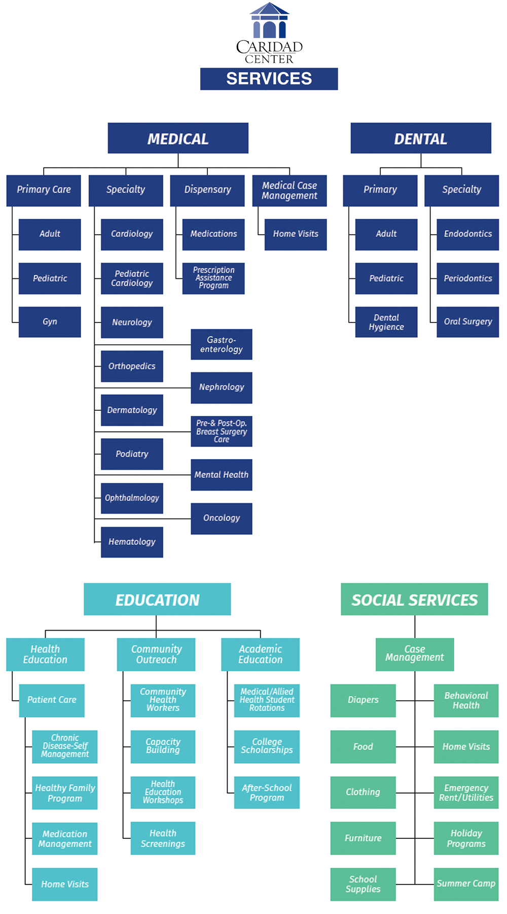
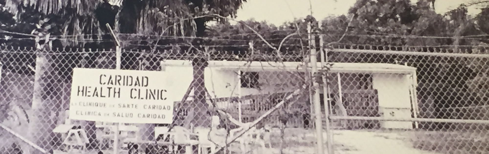
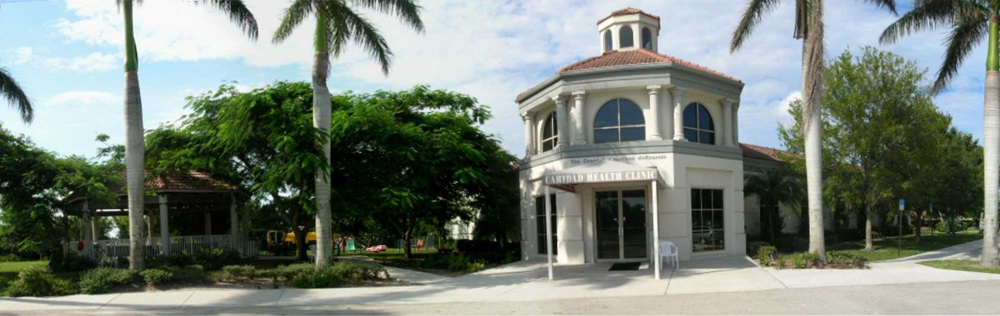

Caridad Center is the largest free healthcare clinic in Florida and one the largest in the entire nation.
Caridad offers comprehensive medical, vision, & dental care for the uninsured and underserved children & families of Palm Beach County. More than 700 doctors, dentists, nurses, and dental hygienists, as well as many others in the area of outreach & education, give their time so generously to help our cause.
The Caridad Center is working tirelessly daily to ensure that the poor, uninsured, and underserved individuals and families of Palm Beach County receive our life-changing healthcare, education, and outreach programs. Caridad gives families a fighting chance to stay healthy and to get the proper medical, vision, & dental treatment. For thousands of people in Palm Beach County who come from all walks of life, Caridad is the only hope they will have for living a healthy life.
From Humble Beginnings
Social worker and health educator Caridad Asensio and school teacher Connie Berry met while both were working at Hagen Ranch Elementary School in West Boynton Beach, FL. In the late 1980s, most of the land in the surrounding areas was used for agriculture. Many of the school children from farmworker families were in dire need of medical and dental care, food, clothing, and homework help. The two women founded the Migrant Association of South Florida in 1989 in order to help these children and to provide housing to agricultural workers and their families.
Three years later with the help of volunteer doctors and dentists they started a free clinic in a doublewide trailer located on State Road 441 in Boynton Beach, FL. On opening day at 7:00 am, nearly 400 people were lined up to receive services. In 1997, through the generosity of local donors, the clinic was able to purchase land, build and open what is now the current location – a 7500 square-foot building in Boynton Beach, a few miles east of the original location.
The Migrant Association name was changed in 2005 to Caridad Center to reflect the changes in the client population and to be more inclusive of the agency’s three-fold mission of health, education, and outreach. Today, as Palm Beach County has lost its agricultural base, our clients are the uninsured, working poor.
Today, Caridad Center is the largest free clinic in Florida, and one of the largest in the country in terms of people served. Thanks to our tremendous donors and supporters, Caridad continues to expand and increase our life-changing and life-saving programs and services to help the poor, uninsured, and underserved children & families of Palm Beach County.